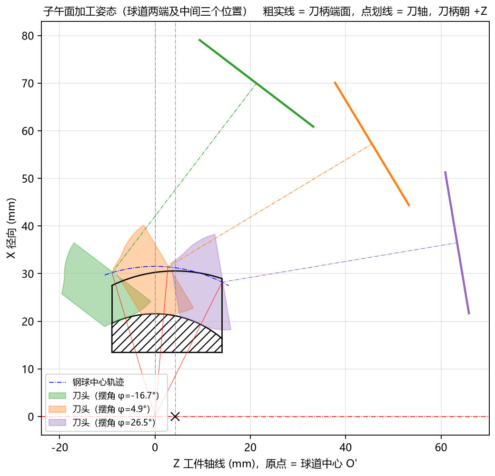

5.4 Tab 4：加工姿态(子午面) (Ctrl+4)
加工姿态(子午面) 标签页将设计好的成型刀头与刀柄放入星形套子午面坐标系中，同步展示刀具在球道左端切入极限位置、中间位置、右端切出极限位置三个典型摆角下的空间切削姿态。

一、运动包络姿态直观图解
如顶部标题栏所示（子午面加工姿态 (球道两端及中间三个位置) 粗实线 = 刀柄端面，点划线 = 刀轴，刀柄朝 +Z），图面由以下核心元素构成：
- 回转摆动基准点（原点
Z = 0, X = 0）：- 位于底部中央的球道中心 ，三条红色细实线从 呈扇形发散，分别指向刀具在左、中、右三个位置时的虚拟钢球中心。
- 钢球中心轨迹（蓝色点划线圆弧）：
- 刀具球心基准点沿着以 为圆心、半径为 的蓝色点划线圆弧轨迹摆动进给。
- 三个关键摆角位置的刀头与刀柄：
- 绿色（
刀头 (摆角 φ=-16.7°)）：刀具运动到星形套左侧端面球道口部时的极限摆角姿态； - 橙色（
刀头 (摆角 φ=4.9°)）：刀具运动到球道中部位置时的姿态； - 紫色（
刀头 (摆角 φ=26.5°)）：刀具运动到星形套右侧端面球道口部时的极限摆角姿态； - 每组颜色均包含三部分：半透明刀头实体截面 + 延伸向右上方的点划线（刀具旋转轴线） + 末端的粗实线（刀柄端面，距离球心
L = 50 mm）。
- 绿色（
二、工程师如何利用此图做机床防干涉校核？
在将刀具图纸下发制造或上机调试前，请通过本图重点检查以下 3 项工程安全性：
- 核对球道两端加工摆角行程范围：
- 直接从左下角图例读取当前零件球道加工所需的机床 B 轴/摆台角度范围（例如从
-16.7°摆动至+26.5°，总摆角行程约43.2°），确认机床摆台行程完全覆盖该角度区间。
- 直接从左下角图例读取当前零件球道加工所需的机床 B 轴/摆台角度范围（例如从
- 检查刀头与刀柄端面的安全间隙：
- 观察绿、橙、紫三条粗实线（代表直径为
刀柄直径、距离球心为球心距 L的刀柄/主轴端面位置）与星形套外球面及右端面之间的空间距离，确保在极限摆角+26.5°时主轴端面不会与工件或夹具发生干涉。
- 观察绿、橙、紫三条粗实线（代表直径为
- 切换
刀柄方向对比正反装夹布局：- 如果您的机床主轴位于左侧（ 方向），可在左侧高级参数中将
刀柄方向从朝 +Z切换为朝 -Z，重新点击计算，即可在本图中看到刀轴点划线与刀柄粗实线朝向左侧（ 方向）伸出的镜像加工姿态。
- 如果您的机床主轴位于左侧（ 方向），可在左侧高级参数中将